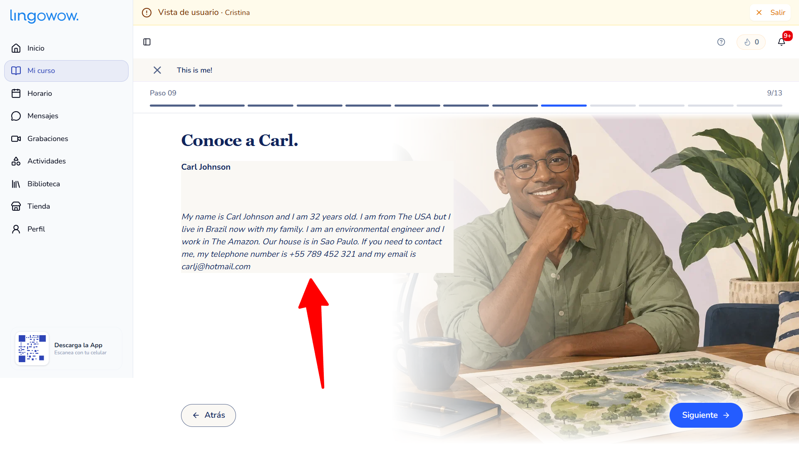
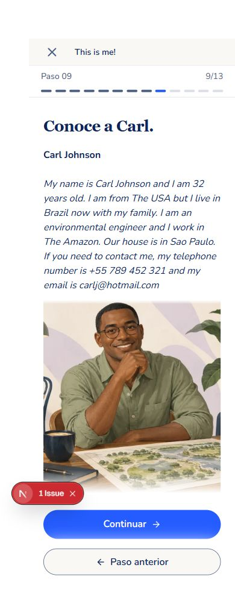

Referencia del usuario y captura real local a 1920×1080. La caja crema se elimina; el texto se integra con el fundido blanco del escenario.


Ruta local temporal con bloques reales; shell autenticado y publicación se comprueban aparte.